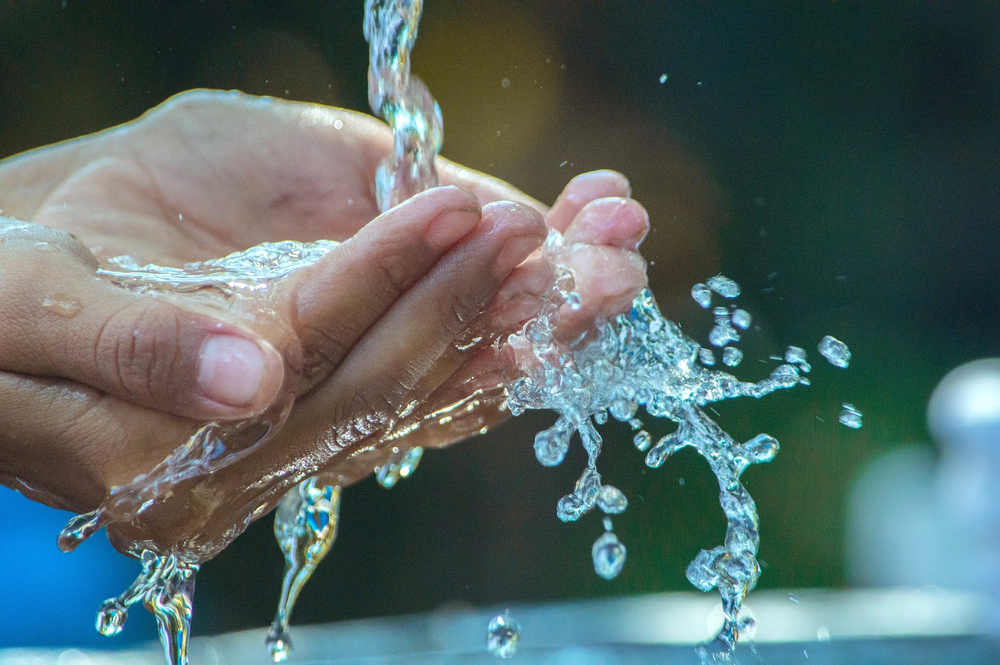

친환경Eco Friendly

항생제, 호르몬 및 미세 플라스틱 등의 유해환경으로부터 완전히 안심하고 유통하고 소비할 수 있는 수산물을 생산합니다.
경제성Improved Economy
재래식 내수면 양식 대비 1/20 수준의 물 사용량과 최소한의 사료 유실을 통해 양식 비용을 획기적으로 절감합니다.
친환경Waste Recycling

혁신적인 수자원 순환을 통해 폐수 배출량 ZERO를 목표로 하며, 발생한 유기폐수는 유익한 자원으로 재활용 될 수 있도록 목표합니다.